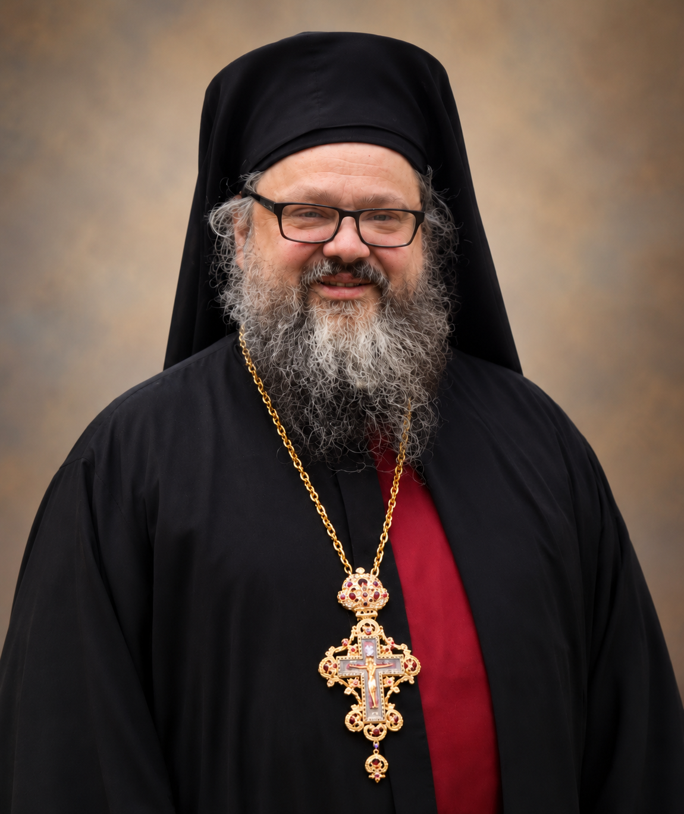
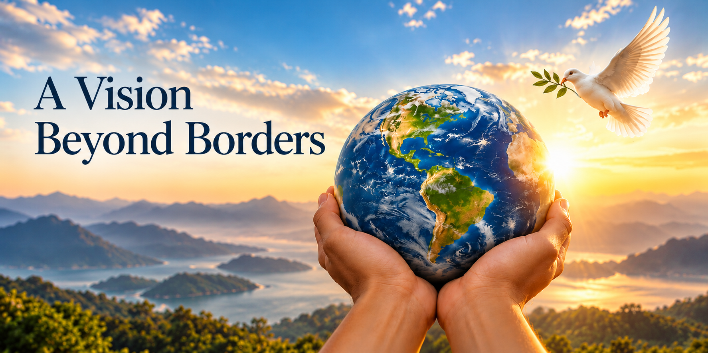

A nonprofit organization for individuals, communities, animals, and our shared environment.
Who We Are
Your Global Voice, Inc. is an independent, multicultural, and nonpartisan nonprofit organization working for a more just, compassionate, and sustainable world.
Your Global Voice, Inc. is a nonprofit organization founded in New York, United States, with a vision that reaches beyond borders. We are dedicated to defending human dignity, providing assistance to individuals and communities affected by humanitarian crises, protecting vulnerable animals, and preserving the environment for future generations.
As a newly established, multicultural organization, we believe that compassion knows no borders and that everyone deserves dignity, fairness, and respect. We welcome people from all backgrounds, and our assistance is guided by need regardless of religion, ethnicity, nationality, political beliefs, or social background. As an independent, nonpartisan organization, we do not endorse political parties or movements.
We stand for human rights, dignity, and freedom, and against discrimination, persecution, and injustice in all their forms. We seek to be a voice for those whose voices are too often ignored or silenced, while providing humanitarian support to individuals and communities facing crises and circumstances that threaten their safety, dignity, and well-being.
Our responsibility extends beyond humanity. We are committed to opposing animal cruelty, protecting vulnerable animals, and promoting their humane treatment. We are equally committed to protecting ecosystems and biodiversity and encouraging responsible action to preserve our planet for future generations.
Through our projects and partnerships, we turn our commitment into meaningful action. We welcome everyone who shares our values to stand with us, take part, and help create lasting change.
Our Foundation
Built on human dignity, humanitarian care, animal welfare, and environmental protection.
Our Commitment
To create meaningful change by supporting individuals, relieving hardship, protecting animals, and caring for our planet.
MY VOICE + YOUR VOICE = OUR VOICE
Meet Our Team
The leadership of Your Global Voice, Inc. brings experience, dedication, and a shared vision for change.
Andreas Elefteriadis
Founder & President
Born in 1982 in Trabzon, Turkey, Andreas Elefteriadis has devoted much of his life to humanitarian service, advocating for human dignity, and supporting vulnerable communities.
His experience includes volunteering in international humanitarian projects, assisting refugees and disadvantaged communities, and working as an interpreter across cultural and linguistic barriers. He currently supports individuals with developmental disabilities and has actively contributed to animal welfare and environmental protection.
Inspired by these experiences, Andreas founded Your Global Voice to unite people across borders, stand against injustice, and turn compassion into meaningful action.
His vision is to build a world where kindness becomes action, every life is valued, and every voice has the chance to be heard.

Archimandrite Maximos Weimar
Vice President
Born in 1966 on Long Island, New York, Archimandrite Maximos Weimar is an Orthodox Christian priest, spiritual leader, and educator with more than three decades of religious experience. Having embraced Orthodox Christianity in 1993, he was elevated to the rank of Archimandrite in 2003 and has dedicated his life to spiritual guidance, theological education, and service to others.
He currently serves in the Russian Orthodox Church Outside Russia as Abbot of Saint Panteleimon Skete in Florida and Administrator of Saint John Cassian Chapel in Alabama. He is also Abbot Emeritus of the Monastery of Saint Dionysios the Areopagite in New York. His extensive leadership experience reflects a longstanding commitment to compassion, human dignity, and community service.
As Vice President of Your Global Voice, Father Maximos brings his spiritual wisdom, leadership experience, and dedication to helping others. His vision is one where compassion unites us, kindness inspires action, and every life is treated with dignity and respect.
Robert Shillenn
Secretary & Treasurer
Born in Pennsylvania, Robert Shillenn brings to Your Global Voice a wealth of international experience, academic knowledge, and a longstanding commitment to education and community service. He earned his bachelor’s degree from Providence College in Rhode Island and a master’s degree in theology from Saint Mary’s Seminary and University in Baltimore, Maryland.
Throughout his career, Robert has worked as an educator, interpreter, and translator across the United States, Europe, and West Africa. His multilingual expertise and international experience have strengthened his understanding of diverse cultures and communities. He has also participated in humanitarian volunteer work in rural Mexico and served on organizational boards, including that of a rural hospital in Nevada.
As Secretary and Treasurer of Your Global Voice, Robert contributes his extensive knowledge, international perspective, and dedication to responsible leadership. His experience reflects the belief that understanding brings people together, compassion crosses borders, and meaningful action can create lasting change.
Be Part of Our Story
Support our mission, get involved, or have a question.
A shared commitment to defending human dignity, providing humanitarian assistance, advancing animal welfare, and protecting our environment.
Who we are

INDEPENDENT | MULTICULTURAL | NONPARTISAN
Your Global Voice, Inc. is a nonprofit organization founded in New York, United States, with a vision that reaches beyond borders. We are dedicated to defending human dignity, providing assistance to individuals and communities affected by humanitarian crises, protecting vulnerable animals, and preserving the environment for future generations.
As a newly established, multicultural organization, we believe that compassion knows no borders and that everyone deserves dignity, fairness, and respect. We welcome people from all backgrounds, and our assistance is guided by need regardless of religion, ethnicity, nationality, political beliefs, or social background. As an independent, nonpartisan organization, we do not endorse political parties or movements.
We stand for human rights, dignity, and freedom, and against discrimination, persecution, and injustice in all their forms. We seek to be a voice for those whose voices are too often ignored or silenced, while providing humanitarian support to individuals and communities facing crises and circumstances that threaten their safety, dignity, and well-being.
Our responsibility extends beyond humanity. We are committed to opposing animal cruelty, protecting vulnerable animals, and promoting their humane treatment. We are equally committed to protecting ecosystems and biodiversity and encouraging responsible action to preserve our planet for future generations.
Through our projects and partnerships, we turn our commitment into meaningful action. We welcome everyone who shares our values to stand with us, take part, and help create lasting change.
MY VOICE + YOUR VOICE = OUR VOICE
Our foundation
What We Stand For
Our principles shape who we are, guide our decisions, and define the responsibility we carry toward people, animals, and our planet.
HUMAN RIGHTS & DIGNITY
Defending People Against Persecution and Discrimination in All Forms
Regardless of religion, race, ethnicity, nationality, or national origin.
HUMANITARIAN ASSISTANCE
Bringing Hope and Relief When Crisis Strikes
Providing essential assistance and support to individuals and communities in times of need.
ANIMAL WELFARE
Giving Vulnerable Animals the Care They Deserve
Supporting their safety, care, and well-being.
ENVIRONMENTAL PROTECTION
Preserving Our Planet for Generations to Come
Advancing conservation, sustainability, and responsible care for our natural world.
Meet Our Leadership
At Your Global Voice, our leadership is guided by a shared belief that every life deserves dignity, compassion, and care. United by a commitment to serving others, we work toward a world where human rights are respected, communities in need are supported, vulnerable animals are protected, and our environment is preserved for future generations.
Andreas Elefteriadis
Founder & President
Born in 1982 in Trabzon, Turkey, Andreas Elefteriadis has devoted much of his life to humanitarian service, advocating for human dignity, and supporting vulnerable communities.
His experience includes volunteering in international humanitarian projects, assisting refugees and disadvantaged communities, and working as an interpreter across cultural and linguistic barriers. He currently supports individuals with developmental disabilities and has actively contributed to animal welfare and environmental protection.
Inspired by these experiences, Andreas founded Your Global Voice to unite people across borders, stand against injustice, and turn compassion into meaningful action.
His vision is to build a world where kindness becomes action, every life is valued, and every voice has the chance to be heard.
Archimandrite Maximos Weimar
Vice President
Born in 1966 on Long Island, New York, Archimandrite Maximos Weimar is an Orthodox Christian priest, spiritual leader, and educator with more than three decades of religious experience. Having embraced Orthodox Christianity in 1993, he was elevated to the rank of Archimandrite in 2003 and has dedicated his life to spiritual guidance, theological education, and service to others.
He currently serves in the Russian Orthodox Church Outside Russia as Abbot of Saint Panteleimon Skete in Florida and Administrator of Saint John Cassian Chapel in Alabama. He is also Abbot Emeritus of the Monastery of Saint Dionysios the Areopagite in New York. His extensive leadership experience reflects a longstanding commitment to compassion, human dignity, and community service.
As Vice President of Your Global Voice, Father Maximos brings his spiritual wisdom, leadership experience, and dedication to helping others. His vision is one where compassion unites us, kindness inspires action, and every life is treated with dignity and respect.
Robert Shillenn
Secretary & Treasurer
Born in Pennsylvania, Robert Shillenn brings to Your Global Voice a wealth of international experience, academic knowledge, and a longstanding commitment to education and community service. He earned his bachelor’s degree from Providence College in Rhode Island and a master’s degree in theology from Saint Mary’s Seminary and University in Baltimore, Maryland.
Throughout his career, Robert has worked as an educator, interpreter, and translator across the United States, Europe, and West Africa. His multilingual expertise and international experience have strengthened his understanding of diverse cultures and communities. He has also participated in humanitarian volunteer work in rural Mexico and served on organizational boards, including that of a rural hospital in Nevada.
As Secretary and Treasurer of Your Global Voice, Robert contributes his extensive knowledge, international perspective, and dedication to responsible leadership. His experience reflects the belief that understanding brings people together, compassion crosses borders, and meaningful action can create lasting change.
One World | Countless Voices | One Shared Purpose
Discover the mission that guides us, the values that unite us, and how together we can make a lasting difference in the world.